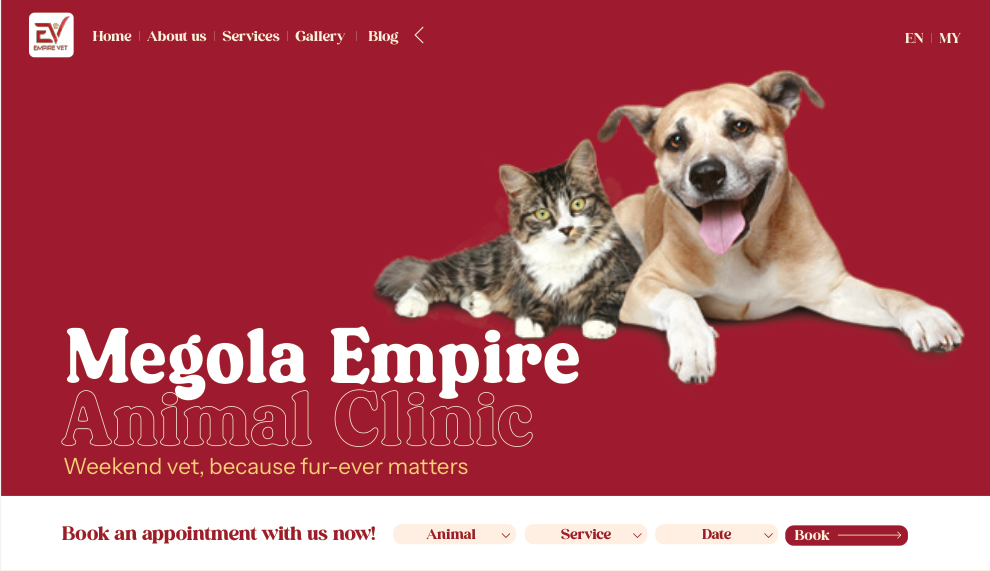
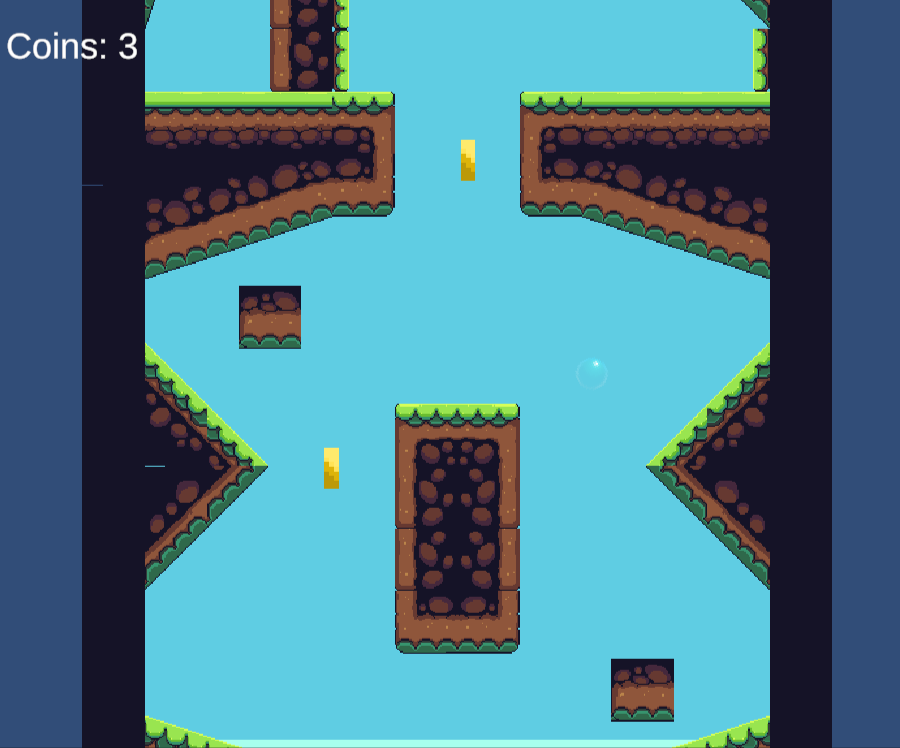

Projects
Bringing ideas to life.
Web Development 🌐
01
Megalo Animal Clinic Website

I led the development of the Megalo Empire Clinic’s first official website as part of my SSE2150 course project, where we worked with a real client to solve their business problem. The website enhances the clinic’s online presence, making essential information more accessible while improving patient interaction.
- Built with plain HTML, CSS, and JavaScript for a lightweight and maintainable codebase.
- Integrated the WhatsApp API for seamless appointment booking.
- Utilizes Google Sheets for real-time content updates.
- Optimized for SEO and accessibility to enhance visibility and user experience.
Tech Stack: HTML, CSS, JavaScript, Google Sheets API, WhatsApp API
View Code02
Equation Quest Website
A solo side project inspired by the famous show University War. It challenges players to enhance their arithmetic and problem-solving skills through engaging gameplay. The game currently features two modes: Calculation Clash and Formula Archery, with plans for multiplayer integration in future updates.
- Built using React for a dynamic and interactive gaming experience.
- Features Calculation Clash, a speed-based arithmetic challenge, and Formula Archery, a strategic formula-building game.
- Future updates will introduce multiplayer mode and AI opponents.
- Designed for scalability, with leaderboards, progress tracking, and UI/UX improvements planned.
Tech Stack: React, JavaScript, HTML, CSS
View CodeGame Development 🎮
01
Bubble Parallel

A physics-based platformer developed during Global Game Jam Malaysia 2025. Created within a tight 48-hour deadline, the game explores unique tilemap-switching mechanics with smooth transitions, challenging players to navigate parallel worlds.
- Developed using Unity (C#) with a focus on tilemap switching and physics interactions.
- Showcases seamless world transitions for engaging and dynamic gameplay.
- Built using version-controlled Git, enhancing collaboration and iteration during the jam.
- Designed with scalability in mind, allowing future expansions and refinements.
Tech Stack: Unity (C#), Git, GitHub
View CodeAI & Data Science 🤖
01
AI-Powered Study Tracker
A future project aimed at helping individuals optimize their study habits through AI and machine learning. This self-tracking system will analyze study patterns and provide data-driven insights for habit improvement.
- Utilizes AI and ML for pattern recognition in study hours.
- Employs classification models to identify optimal study strategies.
- Integrates data visualization for progress tracking.
- Designed for personalized habit optimization.
Status: In planning phase